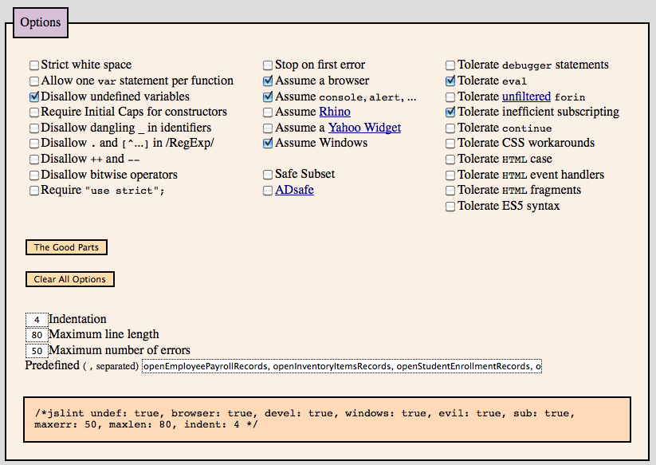
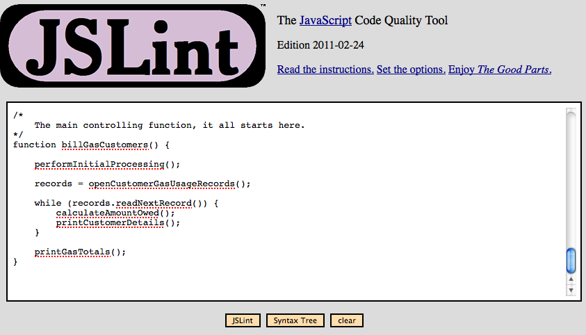
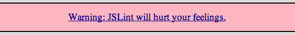
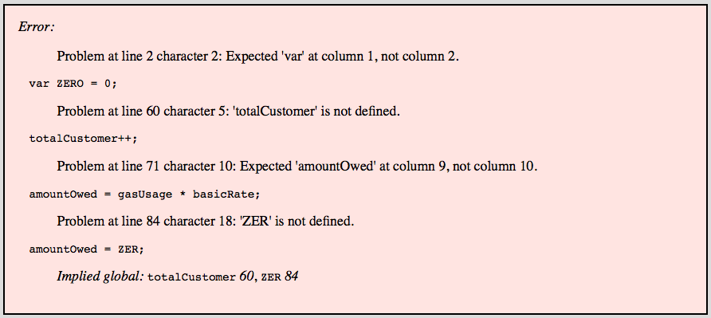
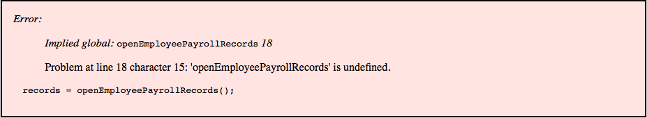
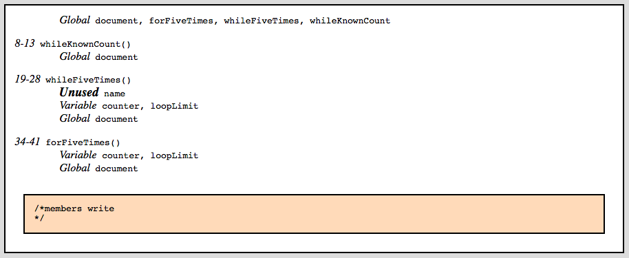

Learning Unit 4
Learning Unit 4Using jsLint
File: unit4/jsLintUsage.html
Readings
- jsLint (http://www.jslint.com/)
Introducing jsLint.
- JavaScript doesn't have a compiler that checks our syntax for us. There are some things about JavaScript, like semicolons, where things will work but it is not the right way to code. Is there a way to check our code?
- Yes!
- jsLint is an online web application that will check your code and help you write JavaScript better and faster.
jsLint Overview
- When you go to the jsLint site you an area to enter your code and a settings area with a lot of check boxes.
- Here are the steps to using jsLint.
- Access the site at http://www.jslint.com/
- Set the checkboxes in the settings area.
- Copy and paste your code into the top text area.
- Click on the button labelled
jsLint. - Fix errors and issues that jsLint finds.
- When you no longer get an errors box then you are done!
jsLint Settings
- Here are the settings that match our course coding standards.
- Select checkboxes so that your settings look like this:

Entering Your Code
- After you change the setting then copy your code from your editor and paste it into the large text area at the top.
- Then click on the
jsLintbutton. - Here's what this looks like:

jsLint Errors
- When you first go to the jsLint site you will see this;

- This is because it is very picky, almost as picky as I am!
- Don't worry, you will come to really like this application.
- But first, you need to get your errors fixed.
- Most likely, when you first try jsLint on your code you will see the error listings. Something like this:

- Just keep fixing your code until the error list goes away.
Errors That Are OK
- Once we get to using Record Sets, you will start to see errors like this:

- This is happening because jsLint doesn't have the source code for the record set. Consequently, this error is OK and there's nothing you can do about it anyway.
jsLint Code Summary
- Once you get all your errors fixed you will see something like this:

- Wait! You might not be done yet. Do you see the Unused variable? jsLint will find these for you and it's a good idea to remove them.
Now We're Done!
- This will let you make much better code than you can all by yourself and will get you used to the java compiler and the VS editor nagging you all the time!